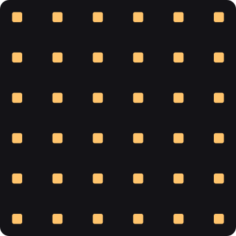
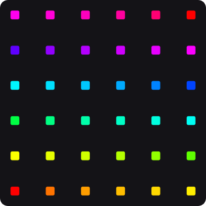
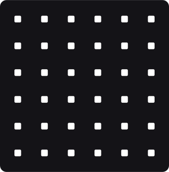
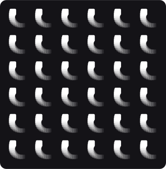
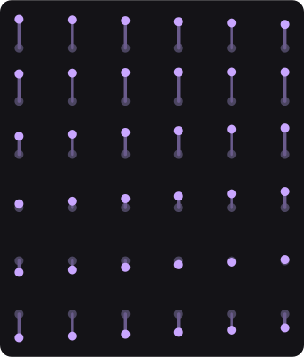
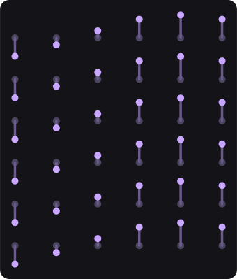

Nos seis tutoriais anteriores você pôs peças na tela, fê-las andar, dobrou-as, escolheu quem é afetado, entregou-as a uma lei e deu-lhes um número que manda em tudo. Faltava a pergunta que o público vê primeiro: com que cara é que elas aparecem.
Este grupo responde a três perguntas, e a cena tem uma fileira para cada uma:
| fileira | a pergunta | o par |
|---|---|---|
| cima | de que cor é cada peça? | Tint contra Color Ramp |
| meio | que marca ela deixa ao andar? | sem cauda contra Trail |
| baixo | quando é que cada uma chega? | Slit Scan pela ordem contra pelo lugar |
Output. Até esta volta de trabalho, seis dos dez tiravam a cena inteira da placa
gráfica e mandavam-na para o processador. Agora os dez correm na placa.Cole isto inteiro num terminal. Na primeira vez ele compila (alguns minutos); depois abre em segundos.
O pano da esquerda é todo de uma cor. Quem manda nisso é o cartão Tint: ele pinta cada peça que passa com a mesma cor. O da direita tem o cartão Color Ramp no lugar dele — e cada peça recebe a sua cor, tirada de um gradiente que atravessa o pano pela ordem das peças.

Tint
Color RampTint e escolha outra cor na linha
Color.
Color Ramp e abra a linha
Gradient. Mexa numa das paradas do gradiente.
Nos dois panos do meio cada peça anda numa pequena roda. O da direita tem um cartão a mais — o Trail — e cada peça passa a deixar uma cauda: cópias dela própria nos sítios onde esteve, cada vez mais pequenas e mais apagadas.

sem Trail
com TrailTrail e arraste Length até ao fim.
Tail Alpha para 1.
Tail Size para 1.
Trail não está onde devia.Length deixa, isso chega para cerca de sessenta e cinco mil peças.Os dois panos de baixo sobem e descem juntos — e o cartão Slit Scan faz cada peça chegar atrasada, cada uma com o seu atraso. O que muda entre os dois é de onde vem o atraso:
Slit Scan: ORDEM), o atraso vem da
ordem das peças: a onda sobe o pano linha a linha, a começar pela de baixo;Slit Scan: CAMPO), o atraso vem do
lugar da peça: a onda corre da esquerda para a direita, com as seis linhas
juntas.
Delay By: Order
Delay By: FieldSlit Scan: ORDEM e mude Delay By
para Field.
Order e arraste a linha Lag.
Lag é quanto tempo separa a
primeira peça da última.Falloff (o que está antes do
Slit Scan: CAMPO) e ligue Invert.
Falloff é o MAPA do atraso. Onde ele vale zero, a peça
não atrasa; onde vale um, atrasa o Lag inteiro. Qualquer cartão que desenhe um
campo serve — é assim que se faz um atraso em forma de círculo, de faixa ou do que o campo
desenhar, sem mexer na ordem das peças.Falloff, troque Shape para
Circle.
Trail, arraste Tail Hue Shift.
Tint, mude Mode para
Gradient.
Tint também sabe fazer um gradiente — de duas
cores, a Color e a End. O Color Ramp é o mesmo com
quantas cores você quiser.São dez cartões. A cena mostra quatro; os outros seis respondem às mesmas perguntas de outra maneira.
| quando você quer… | procure por |
|---|---|
| uma cor só para tudo | Tint |
| uma cor por peça, de um gradiente | Color Ramp |
| uma cor por peça, de uma lista | Color Array |
| que a cena inteira brilhe | Glow — ele acende a imagem
toda, não uma peça |
| uma sombra atrás de cada peça | Drop Shadow |
| as franjas de cor de uma lente barata | RGB Split |
| um clarão quando um pulso chega | Strobe (o do tutorial
6) |
| uma cauda atrás de cada peça | Trail |
| que cada peça chegue atrasada | Slit Scan |
| mostrar outra célula de uma folha de imagens | Sub UV —
para animar uma sprite |
Drop Shadow, Strobe, Trail) escolhem como a cópia se
mistura com o que está por baixo, e a linha chama-se sempre … Blend — a mesma
palavra do Output. A primeira opção, Sink, quer dizer «a do
Output».Medido com 102 400 peças (um pano de 320 por 320), com o computador calmo. «Linhas» é quanto a placa desenha: os cartões que fazem cópias multiplicam-nas.
| cartão | linhas desenhadas | placa | processador |
|---|---|---|---|
Tint | 102 400 | 0,20 ms | 1,77 ms |
Color Ramp | 102 400 | 0,22 ms | 2,84 ms |
Color Array | 102 400 | 0,20 ms | 1,90 ms |
Sub UV | 102 400 | 0,21 ms | 1,42 ms |
Strobe | 102 400 | 0,22 ms | 1,97 ms |
Slit Scan | 102 400 | 0,43 ms | 4,32 ms |
RGB Split — a peça e duas franjas | 307 200 | 1,09 ms | 2,47 ms |
Trail — a peça e oito cópias | 921 600 | 2,35 ms | 23,21 ms |
Drop Shadow — a sombra macia são dezasseis cópias | 1 740 800 | 3,05 ms | 21,82 ms |
Glow — o cartão só passa as peças; o brilho é desenhado depois, na imagem inteira | 102 400 | 0,19 ms | 0,34 ms |
Slit Scan era o mais caro dos dez: com um milhão de peças ocupava um quadro inteiro sozinho (16 milésimos). Foi corrigido nesta volta e hoje custa 3,5.Tint ou o
Color Ramp não está no caminho.Trail não
está onde devia.Delay By de um deles
mudou, ou o Falloff saiu do caminho.